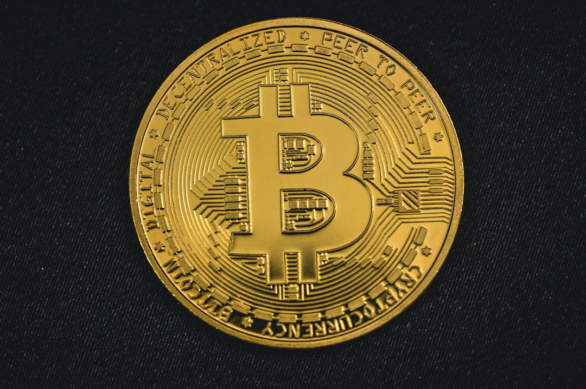

**The Cryptocurrency Conundrum: Capitalism's Greatest Illusion?**
**The Cryptocurrency Conundrum: Capitalism's Greatest Illusion?** In the heart of the digital age, while the capitalist elite scramble to embrace the new frontier of cryptocurrency, an undeniable truth emerges: Bitcoin, Ethereum, and their myriad counterparts are less revolutionary and more a capitalist dream gone awry. As we peel back the layers of this shiny digital facade, it becomes abundantly clear that cryptocurrencies are not just a new monetary system; they are a manifestation of capitalism's insatiable greed, cloaked in the guise of freedom and decentralization. For many, cryptocurrencies are synonymous with rebellion against the traditional banking systems—a tantalizing escape route from the clutches of financial institutions that have long oppressed the working class. But if we delve deeper, we quickly discover that this so-called escape is indeed a mirage. The driving force behind digital currencies is the capitalist pursuit of profit, not the liberation of the masses. Just look at the dramatic rise of Bitcoin: from a mere curiosity in the early 2010s to a speculative asset that has made millionaires—and lost fortunes—practically overnight. This meteoric rise is not due to an intrinsic value or a democratic monetary revolution. No, it’s the relentless quest for capital accumulation by the wealthiest players. When I hear stories of struggling workers investing their meager savings into the latest cryptocurrency craze, my heart aches. They are being lured into a game rigged by the very system they seek to escape. The crypto landscape is characterized not by transparency, as its proponents might have you believe, but by obfuscation and opacity. The same billionaires who manipulate stock markets have found a new playground in the world of digital currencies. Reports from global finance watchdogs indicate that a staggering percentage of Bitcoin is held by a tiny fraction of addresses—hinting very strongly at a concentration of wealth that mirrors that of the traditional financial system. In this sense, cryptocurrency becomes merely a new tool in the hands of the capitalist oppressors. Moreover, many tokens have been created not to empower the disenfranchised but to serve as speculative vehicles for the wealthy. And let’s not forget about the environmental costs. While the world reels from climate change—a crisis brought on largely by capitalist consumption—the mining of cryptocurrencies continues to thrive, sucking up energy as if there’s no tomorrow. Data from the Cambridge Centre for Alternative Finance indicates that Bitcoin mining consumes more electricity annually than entire countries! This insanity parallels the very industries wreaking havoc on our planet. Instead of a decentralized renaissance for the masses, we’ve just reproduced the same capitalist hierarchies—industries that siphon resources and exploit communities while enriching a few. What’s particularly insidious is the framing of cryptocurrency as a pathway to financial inclusivity. The narrative often posits blockchain technology as a revolutionary tool that will uplift the marginalized and create opportunities for all. Yet, this emphasis on technology obscures the social realities that underpin financial access. The digital divide remains glaring. The crypto market is hardly open to everyone; the barriers—technical knowledge, access to smartphones, and reliable internet—mean that the most disadvantaged remain sidelined. The wealthy continue to grasp and hoard the emerging assets, leaving the proletariat yearning for equality trapped in a vicious cycle. Furthermore, regulatory bodies have begun to take note of this digital gold rush, seeing the potential for taxation and control, further aligning cryptocurrency with state power. Governments are often portrayed as the villains in the cryptocurrency narrative, but it’s imperative to recognize that the heaviest participants in this space are consistently advocating for a regulatory framework that serves their interests. This not only protects their investments but also legitimizes cryptocurrencies in the eyes of mainstream institutions—perpetuating the cycle of capitalist exploitation under a shiny new veneer. Real champions of the people cannot stand by and endorse a technology that, through its very structure, exacerbates wealth inequality and environmental degradation. Alternative visions for our monetary systems must prioritize community, solidarity, and ecological sustainability. We can envision digital currencies that are free from the shackles of profit—where resources are utilized for the betterment of all, not just the privileged few. As the cryptocurrency craze continues to captivate attention, it’s crucial for us to engage critically with these developments. The allure of quick wealth and the promise of decentralization must not distract us from the historical lesson that argues against unfettered capitalism. The true
Updated 2025-08-04 22:15 UTC